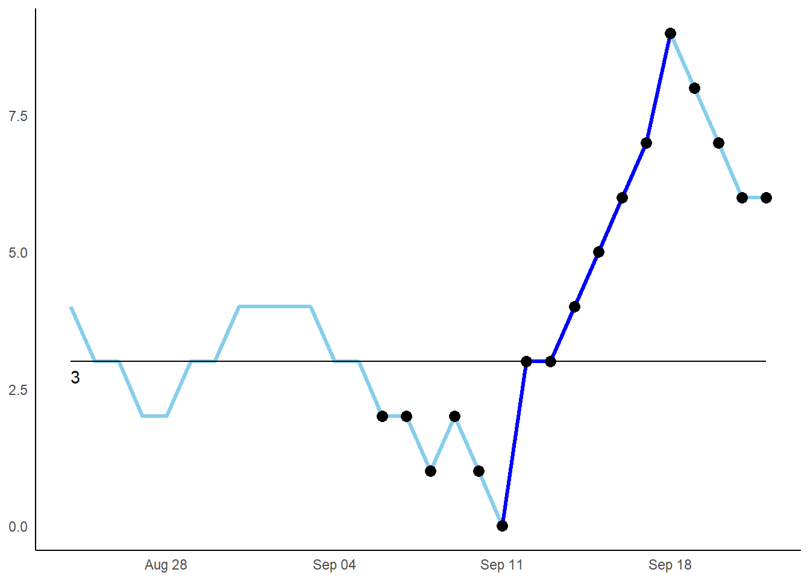
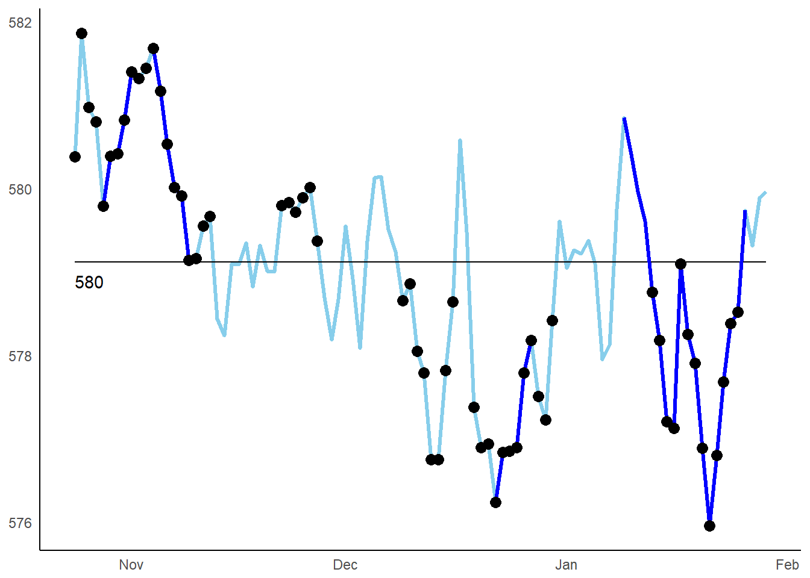

runchart
A run chart is a simple analytical tool that helps us understand changes in data over time. - NHS Healthcare Improvement Scotland.
A number of R packages exist to automate statistical process control charts. For example:
The runchart package is different from the above because it focusses solely on run charts and provides the ability to automatically rephase baselines. The package exports a single easy to use function runchart().
Examples
By default - shifts and trends are displayed (triggering at 6 and 5 consecutive points respectively) and the baseline is not rephased:
library(runchart)
library(ggplot2)
df <- data.frame(date = seq.Date(Sys.Date(), by = "day", length.out = 30),
value = c(4,3,3,2,2,3,3,4,4,4,4,3,3,2,2,1,2,1,0,3,3,4,5,6,7,9,8,7,6,6))
runchart(df)
Both shifts and trends can be independantly suppressed. The baseline can be rephased (triggering at 9 consecutive points):
runchart(df, shift = FALSE, trend = FALSE, rephase = TRUE)
Access the fields behind these plots by setting the output parameter to df:
head(runchart(df, output = 'df'))
#> date base value shift
#> 1 2018-10-28 3 4 NA
#> 2 2018-10-29 3 3 NA
#> 3 2018-10-30 3 3 NA
#> 4 2018-10-31 3 2 NA
#> 5 2018-11-01 3 2 NA
#> 6 2018-11-02 3 3 NAInstallation
This package is available for download from GitHub:
devtools::install_github('jsphdms/runchart')